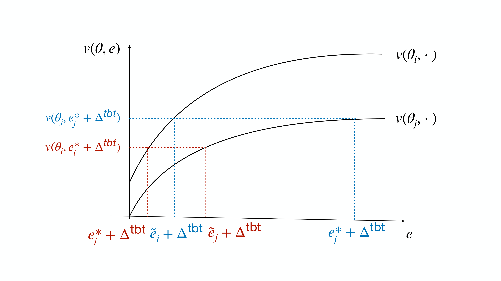
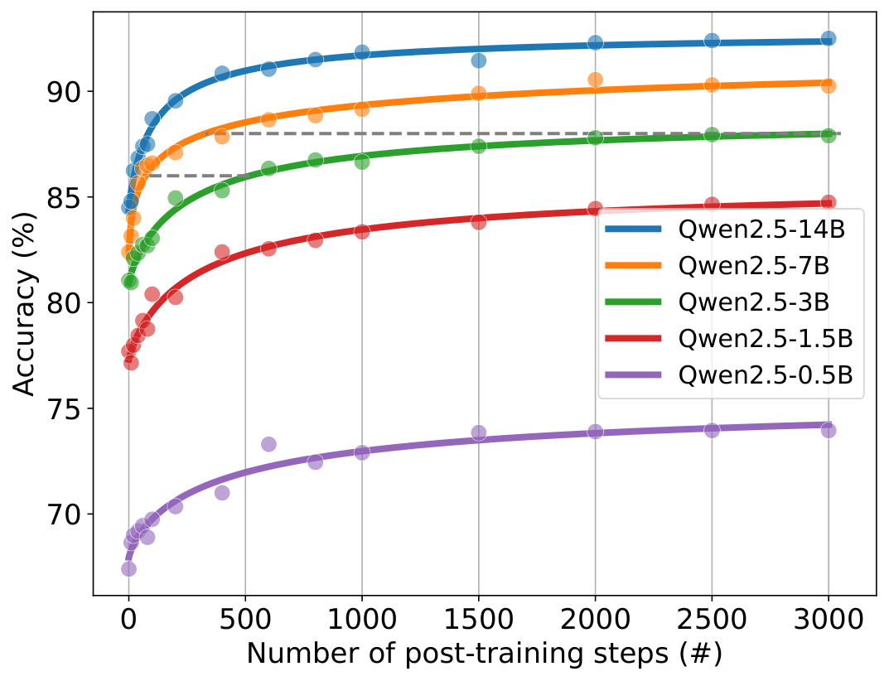
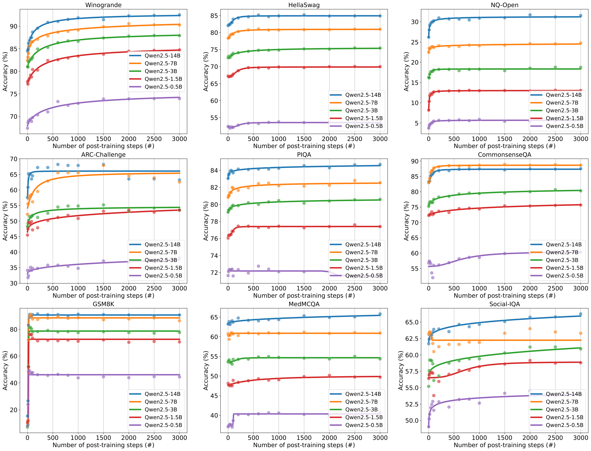

Overview
This paper addresses the pervasive problem of benchmaxxing (strategic benchmark-specific post-training) in modern machine learning leaderboards, where model developers invest effort in optimizing for test-task performance rather than general capability, leading to unstable, misleading rankings that do not reflect true latent model quality. The key insight is to model leaderboard competition as a Stackelberg game between a benchmark designer (who chooses the evaluation protocol) and competing model developers (who choose post-training effort to maximize rank-based reward minus effort cost). The paper first proves that standard benchmarks (with no uniform pre-evaluation adaptation) generally have no pure-strategy Nash equilibrium, explaining persistent arms-race dynamics and opaque strategic behavior. It then shows that the recently proposed tune-before-test (TbT) protocol, which applies the same baseline of benchmark-specific fine-tuning to all submitted models, induces a unique zero-additional-effort Nash equilibrium under mild conditions, where rankings perfectly reflect latent model capability and developers have no incentive to engage in benchmaxxing.
Key Contributions
- Formalizes leaderboard evaluation as a Stackelberg game with a designer choosing evaluation policy first, followed by simultaneous strategic effort choices by model developers, with rank-based rewards and convex effort costs.
- Proves a negative result: standard benchmark protocols (without TbT) typically have no pure-strategy Nash equilibrium, leading to persistent competitive post-training and unstable rankings.
- Proves a positive order-preservation result: if any pure-strategy Nash equilibrium exists for a given protocol, it automatically preserves the latent capability ranking of models, even when developers invest strategic effort.
- Shows that TbT monotonically increases the cost of overtaking higher-ranked models, and derive a minimal stabilizing TbT threshold that induces a unique zero-additional-effort equilibrium with correct capability-based rankings.
- Validates theoretical assumptions empirically on LLM post-training trajectories across 9 benchmarks, showing that a small TbT baseline of 3000 steps increases the required overtaking effort to over 384,000 steps, making strategic post-training unprofitable for developers.
Method
The proposed framework models benchmarking as a two-stage Stackelberg game:
- The benchmark designer first commits to a TbT baseline effort $\etbt \ge 0$, which is applied uniformly to all submitted models.
- Model developers then simultaneously choose additional benchmark-specific effort $e_i \ge 0$ to maximize their utility, which equals rank-based reward minus effort cost.
Core Definitions and Formulations
The paper defines the post-effort score function verbatim as:
The post-effort score of a model with capability $\theta$ and total benchmark-specific training effort $e$ is
$v(\theta,e): \mathbb{R}_{\geq 0}\times \mathbb{R}_{\geq 0}\to [0,1]$.
This function maps latent model capability $\theta$ and total effort (designer TbT + developer additional effort) to benchmark performance. Two standard structural assumptions are imposed:
- Cost function: Effort cost $c(e)$ is non-decreasing, convex, with $c(0)=0$ and $\lim_{e\to\infty}c(e)=\infty$.
- Post-effort score function: Satisfies (C1) monotonicity in capability ($\partial_\theta v > 0$), (C2) diminishing returns in effort ($\partial_e v \ge 0, \partial_{ee}v \le 0$, scores saturate to a limit), and (C3) non-decreasing effort gaps (higher capability models maintain or increase their effort advantage at higher target scores).
Model developer utility is defined as:
$$U_i(e_i; \textbf{e}_{-i}, \etbt) = R_{\operatorname{rank}(v_i)} - c(e_i)$$ where $v_i = v(\theta_i,\etbt+e_i)$, $\operatorname{rank}(v_i):= 1 + \sum_{j\in N\setminus\{i\}}\mathbbm{1}\left\{v_j>v_i\right\}$, and $R_j$ is the exogenous reward for rank $j$ (non-increasing in rank). The benchmark designer's utility prioritizes correct capability ranking over TbT cost: $$U^L(\etbt; \textbf{e}) = R^L \cdot \mathbbm{1}[\rank(v_i) = \rank(\theta_i), \forall i] - n\cdot c^L(\etbt)$$ where $R^L \gg 0$ is the large reward for a correct ranking, $c^L(\etbt)$ is per-model TbT cost, and $n$ is the number of submitted models. ### Equilibrium Analysis A pure-strategy Nash equilibrium (PNE) of the developer subgame is an effort profile where no developer can improve utility by unilaterally changing their effort. The paper first proves that any existing PNE preserves the latent capability ranking: if $\theta_i > \theta_j$, then $v(\theta_i, \etbt + e_i^) \ge v(\theta_j, \etbt + e_j^)$ at equilibrium. The figure below illustrates the counterfactual effort notation used in this proof:

, e_j, and counterfactual efforts needed to match each other's scores." loading="lazy" style="max-width:100%"> Next, the paper defines the just-overtake effort for model $r$ at TbT level $\etbt$: $$e_r^\req (\etbt):= \inf\left\{e\ge 0:\ v(\theta_r,\etbt+e)>s_{r-1}(\etbt)\right\}$$ where $s_{r-1}(\etbt) = v(\theta_{r-1}, \etbt)$ is the baseline score of the model ranked immediately above $r$ at the TbT baseline. This is the minimal additional effort needed for model $r$ to climb one rank. The core negative result follows: any PNE, if it exists, must be the all-zero additional effort profile $\textbf{e}=(0, ...,0)$. If for any $r$, the cost of just-overtake $c(e_r^\req(\etbt))$ is less than the reward gap between ranks $r-1$ and $r$ ($R_{r-1} - R_r$), no PNE exists at all, leading to persistent arms-race dynamics. ### Tune-Before-Test Mechanism The paper proves that increasing the TbT baseline $\etbt$ monotonically increases the just-overtake effort $e_r^\req(\etbt)$ for all $r$, as diminishing returns make further score improvements more expensive. This leads to the definition of the stabilizing TbT threshold: $$\etbt^\star := \inf\left\{ \etbt\ge 0: c\left(e^\req_r(\etbt)\right) \ge R_{r-1}-R_r, \forall r \in \{2, \cdots, n\} \right\}$$ For any $\etbt \ge \etbt^\star$, the all-zero effort profile is a unique PNE, with no developer investing in strategic post-training, and rankings perfectly reflecting latent capability. The paper uses a generalized power-law scaling model fit to empirical post-training data to characterize the required threshold: $$\sigma^{-1}\!\bigl(\tilde v(\theta,e)\bigr) = \alpha(\theta) + \beta(\theta)\log(1+e)$$where $\tilde v$ is normalized score, $\sigma$ is the logit link function, $\alpha(\theta)$ is baseline logit performance, and $\beta(\theta)$ is the effort scaling coefficient. Under this model, the stabilizing TbT threshold grows only polynomially in the reward-to-effort ratio, with a small exponent, meaning very small TbT baselines are sufficient to stabilize rankings.
Empirical validation of the post-effort score assumptions is shown below, using Qwen2.5 model size as a proxy for latent capability on the Winogrande benchmark:


Experiments
The paper validates its theoretical assumptions on post-training trajectories of the Qwen2.5 model family across 9 diverse benchmarks, with model size as a proxy for latent capability and training steps as a proxy for effort. All trajectories fit the generalized scaling law and satisfy the three structural assumptions on the post-effort score function:

The key empirical result on the Winogrande benchmark quantifies how TbT increases overtaking cost:
Table 1: Overtaking Effort Required by TbT Level on Winogrande Benchmark
| TbT Baseline (steps) | Minimal Additional Effort to Overtake Adjacent Model (steps) |
|---|---|
| 0 | 18 |
| 500 | 5,890 |
| 1,000 | 27,412 |
| 3,000 | 384,668 |
A case study using the fitted scaling law shows that for a typical adjacent model pair with a reward gap 73x larger than the baseline overtaking cost, the stabilizing TbT threshold is only ~4 steps, demonstrating that TbT is extremely cost-effective even for large reward gaps.
Limitations & Future Work
The framework relies on simplifying assumptions that can be extended in future work: it assumes no evaluation noise, full information about competitor capabilities among developers, homogeneous effort costs, and deterministic rank tie-breaking. Extending the model to account for these realistic features will improve real-world robustness. Additionally, TbT has practical trade-offs: it requires additional evaluation compute, and may conflate a model's underlying generalization ability with its few-shot adaptation capacity, so it is an imperfect rather than complete solution to strategic evaluation behavior. Future work can also explore hybrid protocols that balance ranking accuracy, evaluation cost, and capability measurement validity.